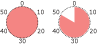

Smula arame och lägg i blöt i vattnet. Finfördela smöret i mjölet till en grynig massa. Tillsätt vattnet och arame och arbeta snabbt ihop till en deg. Låt degen vila kallt minst 1 timme.
Hacka paprikan och löken. Fräs löken och tillsätt vita bönor, paprika, kryddor och tomatpuré. Låt det puttra några minuter.
Tryck ut degen i en pajform och nagga med en gaffel. Grädda 15 minuter i 225°.
Häll fyllningen i pajskalet och strö över osten. Grädda ytterligare 20 minuter i 225°.